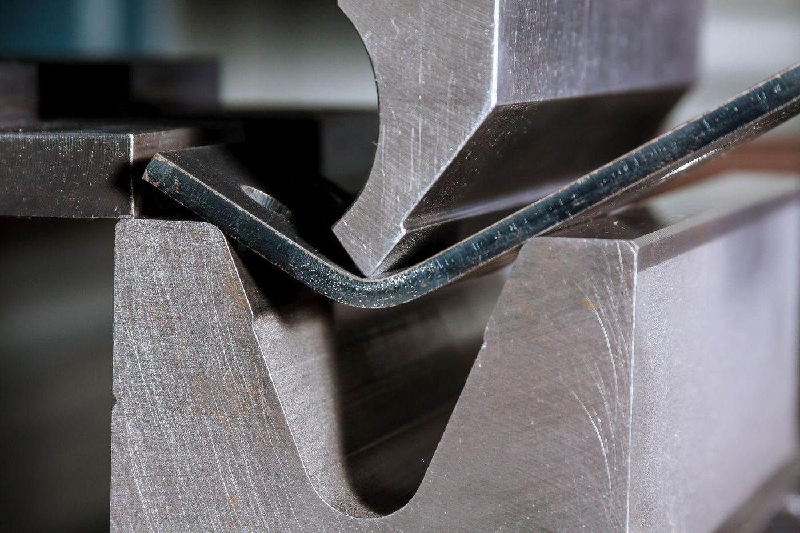
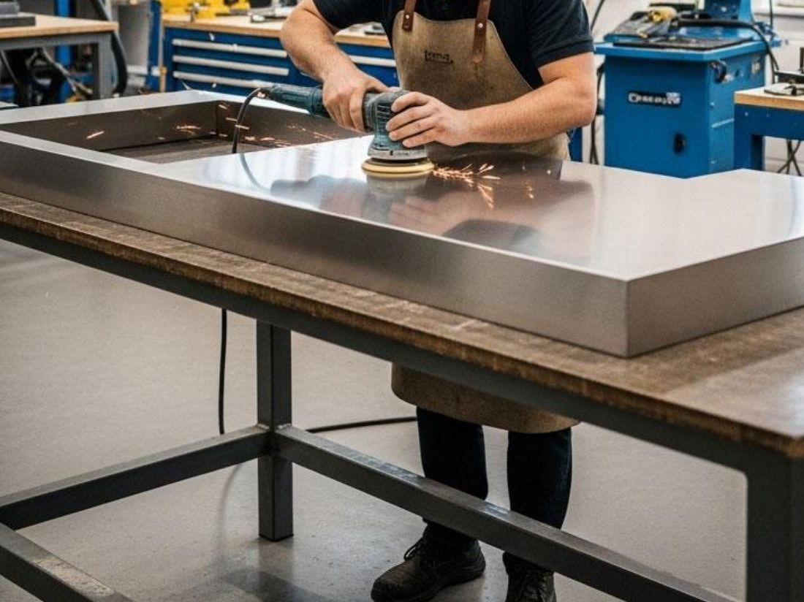

Custom metal furniture usually moves from drawing and material review to cutting and forming, welding and assembly, grinding and polishing, surface finishing, inspection and packing. Products that combine metal with wood, glass or stone add an integration step. The exact route depends on the design, material and finish.
1. Drawing and material review
Before production, drawings, dimensions, materials and finish requirements are reviewed. This is where unclear dimensions, difficult joints or finish conflicts should surface. Checkpoint: confirm that the drawing and specification are final.
2. Cutting and forming
Metal parts are cut from the drawing, for example by laser cutting, and formed by bending where the design needs it. Suitability depends on the material and design.

3. Welding and assembly
Parts are joined into frames and structures. How welds and joints are treated depends on the finish you want: a visible joint and a smooth, seamless look lead to different work. Checkpoint: agree the expected joint appearance before the sample.
4. Grinding and polishing
Welds and surfaces are ground and polished to prepare for the final finish.

5. Surface finishing
Finishes such as spray finishing and PVD plating can be arranged to your color and appearance requirements. Some finishing processes are handled by qualified external suppliers, and we confirm the finishing route for your project.
6. Combining metal with wood, glass or stone
Tops and panels in wood, glass or sintered stone / rock slab can be combined with a metal frame. The frame must support the top, and edge and fixing details need to be agreed. Feasibility is confirmed per project.
7. Inspection
Inspection is coordinated against agreed requirements: drawing and specification review, dimensional inspection, visual finish inspection, welding and assembly checks, sample comparison and pre-shipment checks. This website does not state tolerance values or certifications.
8. Packaging and shipping
Packaging requirements are discussed and confirmed in the quotation, and we support shipping arrangements. Finishes that mark easily may need protective packaging; tell us your requirements early.
Want a process review for your product?
Send your drawing or reference and we will tell you which steps apply and what to confirm.
Buyer checkpoints in one table
| Step | What to confirm |
|---|---|
| Drawing review | Final dimensions, materials and finish |
| Cutting and forming | Material and design suitability |
| Welding and assembly | Expected joint appearance |
| Surface finishing | Finish type, color and finishing route |
| Multi-material | Top support, edges and fixings |
| Inspection | What will be checked and against which sample or drawing |
| Packaging | Protection and carton requirements |
Limits and uncertainties
- Steps vary by product. A simple frame and a multi-material table do not follow the same route.
- Lead time, MOQ and costs are evaluated per project and are not published here.
- Images in this article are conceptual illustrations, not photographs of a specific order.
Request a Manufacturing Quote
Send your drawing, sketch or reference photo and your estimated quantity.